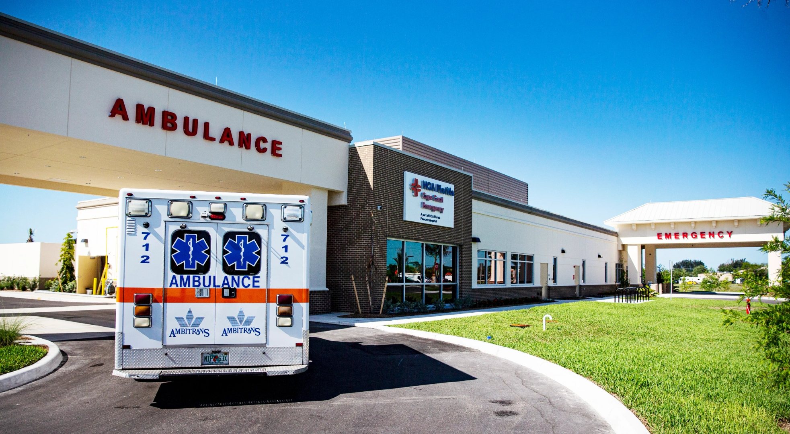

Commercial window replacement in Florida is a different animal from new construction glazing. The building is occupied. The existing conditions have 20 to 40 years of compromises baked in. The Florida Building Code has probably been upgraded multiple times since the building went up, and any replaced openings have to meet current code — not the code that applied when the building was new. Tenant leases put real constraints on work hours. Hurricane season narrows the window of good install weather. A project manager or owner planning a commercial window replacement in Florida needs to think through permits, structural verification, HVAC coordination, tenant notice, schedule, and impact-upgrade economics before the first sub gets the scope. Here's the checklist ACG uses on replacement projects to keep them from turning into change order disasters.

Start With the Permit Question
The first question on any commercial window replacement in Florida is whether the work triggers a building permit. The answer depends on the scope.
Like-for-like IGU replacement — swapping a failed insulating glass unit into an existing frame with the same spec — generally does not require a permit in most Florida jurisdictions. It's classified as maintenance.
Window unit replacement — removing the complete window (frame, glass, hardware) and installing a new unit — almost always requires a permit. The jurisdiction will want the new product's Florida Product Approval (FL) number or, in HVHZ counties, the Miami-Dade Notice of Acceptance (NOA). They'll also want anchor schedules, installation procedures, and sometimes a structural letter if the rough opening is being modified.
Structural opening changes (widening, heightening, or adding new openings) require engineered drawings, structural calculations, and full permit review. Expect 4 to 8 weeks for AHJ review in most Florida counties, longer in Miami-Dade and Broward.
Your glazing sub should be able to tell you which category your project falls into before you start scheduling the work.
The Florida Building Code Upgrade Trigger
When you replace windows in a Florida commercial building, you are required to meet the current Florida Building Code (8th Edition, 2023) at the replaced openings — not the code that applied when the building was originally constructed. For a building built in 1995 outside the wind-borne debris region, that usually doesn't change much. For a building in Miami-Dade or Broward built before the 2001 HVHZ upgrade, it means the replacement windows must carry NOA approval and meet Large Missile Impact under TAS 201/202/203, even if the original windows didn't.
This is the single biggest cost surprise in commercial window replacement. Owners expect to pay residential-style replacement pricing ($25 to $40 per SF) and get commercial impact pricing ($55 to $90 per SF) because the code floor has moved.
Tenant and Occupancy Coordination
Replacing windows in an occupied building is its own project type. The logistics are real.
Notice Requirements
Most commercial leases require 30 to 60 days advance written notice before exterior work that affects tenant premises. Office buildings often require individual tenant coordination. Retail landlords typically notify tenants 45 days out with a detailed schedule by storefront.
Work Hours
Occupied-building window replacement is usually scheduled in three bands: (1) normal business hours in vacant suites, (2) after-hours (6 p.m. to 6 a.m.) for tenant-occupied space, (3) weekend-only for retail corridors where daytime work is disruptive. After-hours work runs 15 to 25 percent higher than daytime labor but is often the only viable schedule for occupied office or hospitality.
Temporary Closures
During the few hours between removing an existing window and installing the replacement, the opening must be weather-tight. For single openings, temporary plywood closures with poly sheeting handle it. For larger spans, temporary scaffold with mesh plus interior plastic work. Budget roughly $200 to $400 per opening for temporary closure labor and materials.
Structural Considerations
Older Florida commercial buildings (pre-1985) sometimes have window openings framed with materials that don't readily accept modern impact anchor schedules. Common situations that trigger structural work:
- CMU walls with grouted cells: Usually fine. Expansion anchors or adhesive anchors hit cleanly.
- CMU walls with ungrouted cells: Often require grout infill at anchor locations before window set — budget extra labor.
- Wood-framed punched openings: May require header reinforcement for larger impact-rated units because impact loads are significantly higher than the original design loads.
- Pre-1980 cast-in-place concrete: Generally excellent substrate but existing embedded anchors are rarely reusable.
- EIFS and stucco wraps: Require flashing redesign at the transition — this is where water intrusion happens later if the installation isn't right.
HVAC and Building Envelope Coordination
Pulling out a window opens a several-hour hole in the thermal envelope. In summer conditions, that can flood the interior with humid air that then condenses on cold HVAC surfaces as the system runs. Coordinate with the building engineer to:
- Shut down the local HVAC zone during window removal and install
- Pre-condition the space to 75 F if possible to reduce thermal shock
- Install temporary vapor barriers on the interior side during the work window
- Re-start HVAC only after the replacement window is fully sealed
Impact Upgrade as Value-Add
If the existing building is outside HVHZ and the original windows were non-impact, the replacement project is an opportunity to upgrade to impact-rated units even if code doesn't strictly require it. The economics usually favor the upgrade:
- Insurance premium reduction: Florida commercial property policies typically discount 15 to 35 percent for verified impact-rated openings
- Shuttering elimination: No more hurricane prep labor cost every year
- Operational continuity: Building stays usable through storm events
- Insurance verification letter: ACG provides post-install letters documenting NOA/FL compliance for the carrier
Incremental cost for impact vs non-impact commercial replacement typically runs 20 to 35 percent. On a 5,000 SF replacement project, that might be $50,000 to $90,000 of incremental glazing cost, paying back on insurance alone inside 4 to 7 years.
Typical Schedule: 12 to 20 Weeks
A properly run commercial window replacement in Florida follows this sequence:
- Week 1-2: Contract, scope verification, field measurement
- Week 3-4: Shop drawings and submittals
- Week 4-6: Submittal review and AHJ permit filing
- Week 6-10: AHJ permit issuance (varies by county), product manufacturing begins in parallel on approved submittals
- Week 10-14: Product arrival (pre-glazed units ship from ESWindows Barranquilla plant on 8 to 10 week lead from order)
- Week 14-18: Field installation
- Week 18-20: Punch, sealant work, final inspection, NOA documentation package to owner
That's the honest timeline. The window replacement industry is full of contractors promising 6 weeks, which is only realistic on the smallest like-for-like residential-scale scopes. On real commercial projects, 12 to 20 weeks is where the math lands.
Pre-Glazed Makes the Field Work Shorter
One reason ACG runs pre-glazed as standard is that it compresses the disruptive part of the schedule. When the storefront units arrive pre-assembled and pre-glazed, field install is essentially setting finished units rather than building them in place. On a 40-opening replacement project, pre-glazed installation can run 2 to 3 weeks versus 5 to 6 weeks for stick-built. For occupied buildings, that means half the tenant disruption. See how it worked on HCA Cape Coral Emergency — a live healthcare facility where schedule compression was non-negotiable.
Choosing the Right Sub Matters More on Replacements
New construction glazing is forgiving because the rest of the envelope is being built around the windows. Replacement work is unforgiving — you're putting new windows into openings that have 20 to 40 years of existing conditions, and every condition has to be flashed and sealed correctly or the new window leaks on the first rain. This is where installation quality from a CGC-licensed sub shows up years later. For more on evaluating subs, see how to choose a commercial glazing contractor.
Planning a commercial window replacement in West Palm Beach or anywhere in Florida? Send existing conditions and scope via contact.html for a site walk and phased pricing.
Ready to get started?
ACG is a CGC-licensed Florida commercial glazing subcontractor (CGC1531993) with offices in West Palm Beach, Naples, and Tampa. We price commercial Division 08 scopes across the state and return competitive, itemized bids within 48 hours. Send your plans and we'll have a scope back to you fast.